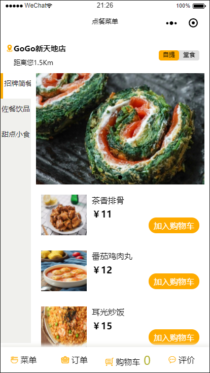
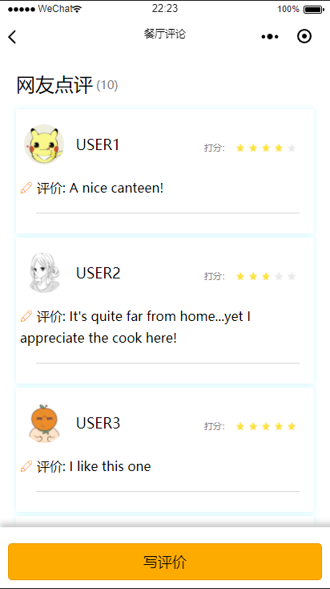
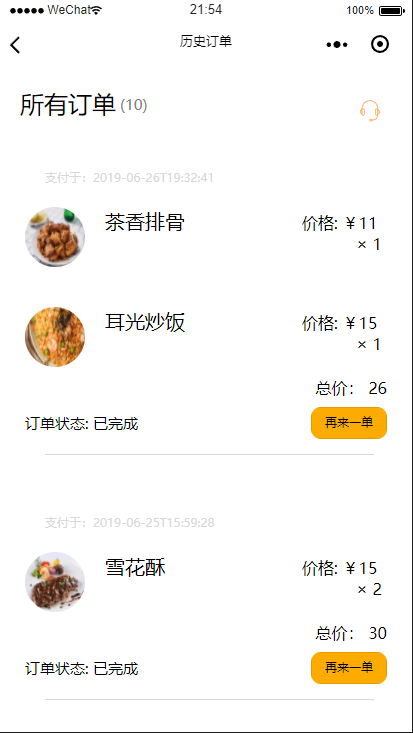
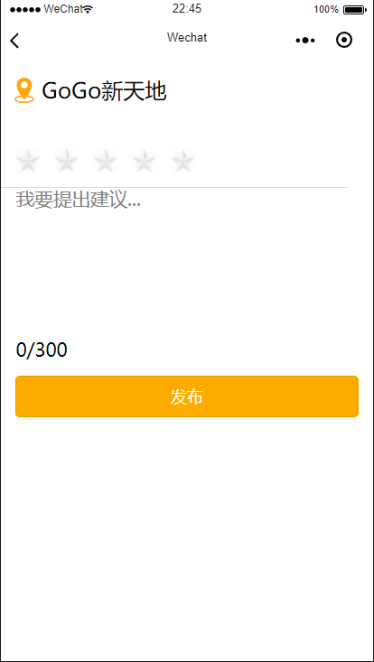

微信小程序界面相关
1. 主要界面分块布局设计：

- 使用四个view进行布局并调整wxss
- 如果遇到一个view被另一个覆盖或重叠，需要将显示在上层的view背景色设为白色，并调整wxss中z-index为较大值
.class{
...;
z-index: 2;
}
- 如果需要江某一view设定为位置固定(不可滑动或随页面移动)，需要在wxss中加入样式
.class{
...
bottom:0px;
display: flex;
position: fixed;
}
- 如果在一行（或一列）中，让几个view均匀分布，表示view内组件之间用空白分开并均匀分布（默认情况view内组件会靠在一起）：
.head{
justify-content: space-between;
...
}
2. 评星组件：

- 使用两种图片来表示星星亮和灭
- 将5个星星同行显示，并且使用data数据flag来判断星星亮和灭，用css来控制：
<text class="score"}> 打分：</text>
<view class="comment1-description">
<view class="star-pos" style="display:flex;flex-direction:row;">
<view class="stars {{item.flag>=1? 'on': ''}}"></view>
<view class="stars {{item.flag>=2? 'on': ''}}"></view>
<view class="stars {{item.flag>=3? 'on': ''}}"></view>
<view class="stars {{item.flag>=4? 'on': ''}}"></view>
<view class="stars {{item.flag>=5? 'on': ''}}"></view>
</view>
</view>
.stars{
background:url("https://gitee.com/zhuyz3/images/raw/master/star-dark.jpg");
margin: 3px;
width: 20rpx;
height: 20rpx;
background-size: 20rpx 20rpx;
transition: 600ms;
}
.on{
background:url("https://gitee.com/zhuyz3/images/raw/master/star.jpg");
margin: 3px;
width: 20rpx;
height: 20rpx;
background-size: 20rpx 20rpx;
transition: 1s;
transform: scale(1,1)
}
- 特别要注意的是装星星的容器view需要调整同行显示：
.comment1-description{
display:flex;
flex-direction:row;
...
}
数据与逻辑相关
1. 列表渲染：

- 使用wx:for进行列表渲染，在js的data中写数据列表
- 如果遇到多层数组，可以使用wx:for-item定义每层元素名，并分层列表渲染
orders: [
[{
image:'image/item-m.jpg',
name: '雪花酥',
price: 15.0,
quantity: 2
}],
[{
image: 'image/item-m.jpg',
name: '芒果',
price: 20.0,
quantity: 3
}],
[{
image: 'image/item-m.jpg',
name: '雪花酥',
price: 15.0,
quantity: 1
},
{
image: 'image/item-m.jpg',
name: '芒果',
price: 20.0,
quantity: 1
}]
]
<view wx:for="{{orders}}" class='orders' wx:for-item='outter' wx:for-index='index'>
<view wx:for='{{outter}}' class='list' wx:for-item='inner'>
<image src="{{inner.image}}" class='img'></image>
<text class='name'>{{inner.name}}</text>
<text class='price'> 价格: ￥{{inner.price}} × {{inner.quantity}}</text>
</view>
</view>
- 数据若不在一个数组中，而是按相同顺序存储在不同数组中，可以利用wx:for-index来进行相同位置访问
create_time: [
"2019-06-25T15:59:28",
"2019-06-25T15:59:55",
"2019-06-25T16:00:34"
],
pay_prices: [
30,
60,
35
]
<view wx:for="{{orders}}" class='orders' wx:for-item='outter' wx:for-index='index'>
<view class="head">
<text class="head_2">支付于：{{create_time[index]}}</text>
</view>
<text class="total_price">总价： {{pay_prices[index]}}</text>
</view>
- 使用wx:key来对数据进行排序并避免重复渲染，提高效率
}<view class="aside">
}<view class="{{tabIndex === index ? 'menu active' : 'menu'}}" wx:for="{{menus}}" wx:key="{{item.id}}" data-index="{{index}}" bindtap='tabMenu'>{{item.menu}}
}</view>
}</view>
2. 数据交互：
- 由于微信小程序列表渲染使用绑定，所以交互比较简单，只需要发送请求后更改data数据即可
- 切换类别时：
requestmenudata: function (category) {//category在data中，用户切换侧边栏时记录index
wx.request({ //向服务器请求该index的菜单目录
url: 'v1/order/<:rid>',
method: 'GET',
header: {
'type': category
},
success(res) {
console.log(res.data);
this.setdata({ //将菜单目录data设置为返回的内容
items: res
});
}
})
}
- 提交数据时获取本地数据并发送即可

submit: function (event) {//event表示点击事件
str = event.target.dataset.text;//表示点击时间发生的view中的文本（输入评论
this.setdata({
tempcomment: str
});
sendcomments(str);
}
sendcomments: function (str) {//发送当前评论给服务器
wx.request({
url: '/v1/comment/<:rid>',
method: 'POST', //使用post方法
header: { //header中写入评论
uid: 1,
content: str
},
success(res) {
console.log(res.data);
}
})
}
3. 跳转页面方式：
- wx.redirectTo: 表示关闭当前页面，前往url页面，无法返回
- wx.navegateTo: 表示当前页面不动，前往url页面，下一个页面会有左上角返回键(见上方订单和评价页面)
- 根据这两个功能，来到菜单之前的注册，欢迎页面使用redirectTo，菜单页面之后的购物车，评论，订单页面使用navigateTo
4. 调用官方api获取个人信息：
setTimeout(function () {
wx.redirectTo({
url: '../menu/menu',
})
}, 3000);
if (app.globalData.userInfo) {
this.setData({
userInfo: app.globalData.userInfo,
hasUserInfo: true
})
} else if (this.data.canIUse) {
// 由于 getUserInfo 是网络请求，可能会在 Page.onLoad 之后才返回
// 所以此处加入 callback 以防止这种情况
app.userInfoReadyCallback = res => {
this.setData({
userInfo: res.userInfo,
hasUserInfo: true
})
}
} else {
// 在没有 open-type=getUserInfo 版本的兼容处理
wx.getUserInfo({
success: res => {
app.globalData.userInfo = res.userInfo
this.setData({
userInfo: res.userInfo,//userInvo.avatarUrl为头像url, userInfo.nickName为昵称
hasUserInfo: true
})
}
})
}